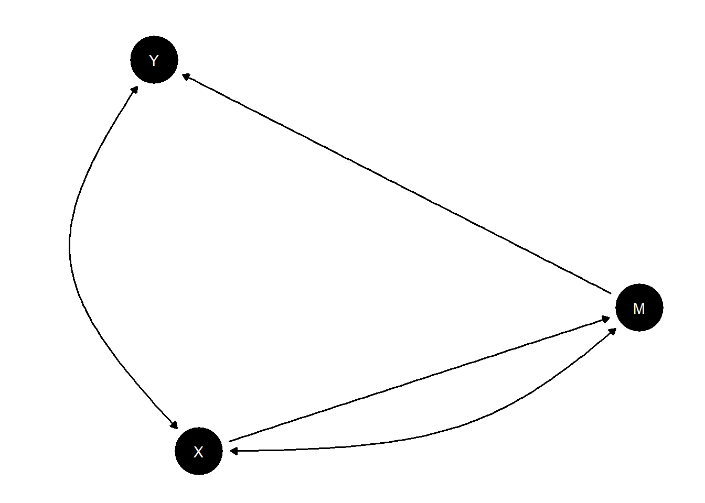
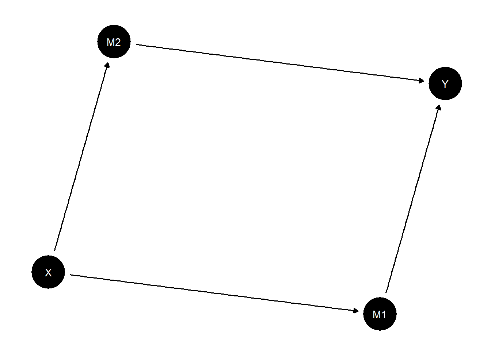

Chapter 10 Mixing methods
In Humphreys and Jacobs (2015) we describe an approach to mixed methods in which within-case inference from a small set of cases are combined with cross sectional data from many cases to form integrated inferences. Reconceived of as a process of updating causal models, the distinction between within-case and cross case data becomes difficult to maintain—both are, after all, just nodes on a model. However the basic procedure can still be implemented, with, in this case, a rooted justification for why within case information is informative for estimands of interest.
10.1 Using within case data to help with identification
Here is a model in which a little within-case data adds a lot of leverage to assessing estimands of interest that cannot be estimated confidently with \(X\), \(Y\) data alone. In this model a front door type criterion is half satisfied. We assume \(X\rightarrow M \rightarrow Y\) but we allow confounding to take the form of \(X\) less likely in cases where \(Y=1\) regardless of \(X\).
With simple \(X,Y\) data, even on many cases (20,000 here), we cannot get precise estimates and we greatly underestimate the effect of \(X\) on \(Y\); with full data on \(M\) in many cases we do very well.
But we also do well even with quite partial data on \(M\), e.g. if we have data for 100 out of 20,000 cases.
Thus a little within-case data helps us make sense of the \(X,Y\) data we have.
The model:

Parameters: We imagine a true model with a treatment effect of .25 but positive confounding (\(X=1\) more likely in cases in which \(Y=1\), regardless of \(X\).
model <-
make_model("X -> M -> Y; X <-> Y")
model <- model |>
set_parameters(
node = c("X", "M", "Y"),
parameters = c(0.75, 0.25,
.25, 0, .5, .25,
.25, 0, .5, .25,
.25, 0, .5, .25))
query_model(model, list(ATE = "Y[X=1] - Y[X=0]"), using = "parameters") |> kable()| model | query | given | using | case_level | mean | sd | cred.low.2.5% | cred.high.97.5% |
|---|---|---|---|---|---|---|---|---|
| model_1 | ATE | - | parameters | FALSE | 0.25 | 0.25 | 0.25 |
We use the model to simulate different types of data we might have access to thus:
n <- 20000
full_data <- make_data(model, n, using = "parameters")
XY_data <- full_data |> select(X, Y)
some_data <- full_data |> mutate(M = ifelse((1:n) %in% sample(1:n, 100), M, NA))Naive analysis:
| Estimate | Std. Error | t value | Pr(>|t|) | |
|---|---|---|---|---|
| (Intercept) | 0.38 | 0.00 | 95.25 | 0 |
| X | 0.25 | 0.01 | 31.32 | 0 |
Note that the estimated ATE is too high – over twice what it should be.
In contrast as seen in the next graph the CausalQueries estimate using \(X,Y\) data only is low – close to our prior at 0 and estimated with wide posterior variance.
With full data on \(X, M\) and \(Y\) we get a tight estimate on the ATE, though our estimate of the nature of confounding is not identified—though it has much tighter bounds than before. With partial data on \(M\) (100 cases out of 20000) we do nearly as well. A small amount of data is enough to narrow bounds on confounding and improve our estimates of the ATE considerably.
# X, Y data only
updated_XY <- update_model(model, XY_data)
# Full Data
updated_full <- update_model(model, full_data)
# Partial Data
updated_partial <- update_model(model, some_data)Figure 10.1: Red lines denote estimand values, black lines show posterior means. Full data allows narrowing of posterior variance on confounding and tight esimates of treatment effects. But even limited data on \(M\) gets us quite far (bottom right panel).
10.2 Distinguishing paths
Here is another example of mixing methods where a little within-case data goes a long way. We imagine that available data makes us very confident that \(X\) causes \(Y\) but we want to know about channels. In such cases, with high confidence about overall effects, and absent unobserved confounding, a little data on mediators might be highly informative.
model <- make_model("X -> M1 -> Y <- M2 <- X") |>
set_restrictions(c(decreasing("X", "M1"),
decreasing("M1", "Y"),
decreasing("X", "M2"),
decreasing("M2", "Y"))) |>
set_parameters(node = "M1", parameters = c(0,1,0), normalize=FALSE) |>
set_parameters(node = "M2", parameters = c(.5, 0,.5), normalize=FALSE) |>
set_parameters(statement = "(Y[M1=1] == Y[M1=0])", parameters = 0) ## Warning in make_par_values(model, alter = "param_value", x = parameters, : A specified condition matches multiple parameters. In these cases it is unclear which parameter value should be assigned to which parameter. Assignment thus defaults to the order in which parameters appear in 'parameters_df'.
##
## We advise checking that parameter assignment was carried out as you intended.
## Warning in make_par_values(model, alter = "param_value", x = parameters, : A specified condition matches multiple parameters. In these cases it is unclear which parameter value should be assigned to which parameter. Assignment thus defaults to the order in which parameters appear in 'parameters_df'.
##
## We advise checking that parameter assignment was carried out as you intended.
We imagine that in truth \(X\) always causes \(Y\) and it does so via \(M1\), though this is not known ex ante:
Q1 <- query_model(model,
queries = list(ate = te("X", "Y"),
via_M1 = "(M1[X=1]>M1[X=0]) & (Y[M1=1]>Y[M1=0])",
via_M2 = "(M2[X=1]>M2[X=0]) & (Y[M2=1]>Y[M2=0])"),
using = c("parameters", "priors"),
expand_grid = TRUE) | model | query | using | case_level | mean | sd | cred.low.2.5% | cred.high.97.5% |
|---|---|---|---|---|---|---|---|
| model_1 | ate | parameters | FALSE | 1.0000 | 1.0000 | 1.0000 | |
| model_1 | via_M1 | parameters | FALSE | 1.0000 | 1.0000 | 1.0000 | |
| model_1 | via_M2 | parameters | FALSE | 0.0000 | 0.0000 | 0.0000 | |
| model_1 | ate | priors | FALSE | 0.2230 | 0.1396 | 0.0300 | 0.5470 |
| model_1 | via_M1 | priors | FALSE | 0.1131 | 0.1024 | 0.0034 | 0.3807 |
| model_1 | via_M2 | priors | FALSE | 0.1098 | 0.1005 | 0.0031 | 0.3696 |
Now suppose we have access to large \(X\), \(Y\), data.
| model | query | given | using | case_level | mean | sd | cred.low.2.5% | cred.high.97.5% |
|---|---|---|---|---|---|---|---|---|
| model_1 | ate | - | posteriors | FALSE | 0.9882 | 0.0048 | 0.9769 | 0.9956 |
| model_1 | via_M1 | - | posteriors | FALSE | 0.5002 | 0.2295 | 0.0507 | 0.9489 |
| model_1 | via_M2 | - | posteriors | FALSE | 0.4880 | 0.2295 | 0.0375 | 0.9354 |
We infer that that \(X\) certainly causes \(Y\). But we are unsure about channels.
However, this changes dramatically with data on \(M_1\) and \(M_2\). Here we assume data on only 20 cases.
query_model(updated_mixed,
queries = list(ate = te("X", "Y"),
via_M1 = "(M1[X=1]>M1[X=0]) & (Y[M1=1]>Y[M1=0])",
via_M2 = "(M2[X=1]>M2[X=0]) & (Y[M2=1]>Y[M2=0])"),
using = c("posteriors"),
expand_grid = TRUE) |> kable(caption = "Inferences with 1000 observations for X, Y, 20 observations for M1, M2")| model | query | given | using | case_level | mean | sd | cred.low.2.5% | cred.high.97.5% |
|---|---|---|---|---|---|---|---|---|
| model_1 | ate | - | posteriors | FALSE | 0.9862 | 0.0052 | 0.9742 | 0.9943 |
| model_1 | via_M1 | - | posteriors | FALSE | 0.9823 | 0.0080 | 0.9631 | 0.9933 |
| model_1 | via_M2 | - | posteriors | FALSE | 0.0039 | 0.0047 | 0.0001 | 0.0169 |
The data now convinces us that \(X\) must work only through one channel. Thus, again, small within case data can dramatically alter conclusions from large \(N\) data when that data has little discriminatory power for the estimands of interest.
10.3 Nothing from nothing
Many of the models we have looked at—especially for process tracing—have a lot of structure, viz:
- conditional independence assumptions
- no confounding assumptions, and
- monotonicity assumptions, or other restrictions
What happens if you have none of these? Can access to observational data render clues meaningful for inferences on causal effects?
We show the scope for learning from a mediator for a “good case”—a world in which in fact (though unknown ex ante to the researcher):
- \(X\) causes \(Y\) through \(M\)
- \(X\) is a necessary condition for \(M\) and \(M\) is a sufficient condition for \(Y\) – and so \(Y\) is monotonic in \(X\) and
- there is no confounding
Here is the data:
data <- make_model("X -> M -> Y") |>
make_data(n = 2000,
parameters = c(.5, .5, .2, 0, .8, 0, 0, 0, .8, .2))| X | M | Y | |
|---|---|---|---|
| X | 1.00 | 0.81 | 0.61 |
| M | 0.81 | 1.00 | 0.77 |
| Y | 0.61 | 0.77 | 1.00 |
We imagine inferences are made starting from two types of model. In both we allow all possible links and we impose no restrictions on nodal types. Even though there are only three nodes, this model has 128 causal types (\(2\times 4 \times 16\)). In addition:
In
model_1we allow confounding between all pairs of nodes. This results in 127 free parameters.In
model_2we assume that \(X\) is known to be randomized. There are now only 64 free parameters.
Here are the models:
model_1 <-
make_model("X -> M -> Y <- X; X <-> M; M <->Y; X <-> Y")
model_2 <-
make_model("X -> M -> Y <- X; M <->Y") Figure 10.2: Two models. The model on the right might be justified if \(X\) is known to be randomized.
Figure 10.3: Two models. The model on the right might be justified if \(X\) is known to be randomized.
After updating we query the models to see how inferences depend on \(M\) like this:
model_1 <- update_model(model_1, data, iter = 6000)
query_model(model_1,
queries = "Y[X=1] > Y[X=0]",
given = c("X==1 & Y==1", "X==1 & M==1 & Y==1"),
using = c("priors", "posteriors"),
expand_grid = TRUE)| model | query | given | using | case_level | mean | sd | cred.low.2.5% | cred.high.97.5% |
|---|---|---|---|---|---|---|---|---|
| model_1 | Y[X=1] > Y[X=0] | X==1 & Y==1 | posteriors | FALSE | 0.5004 | 0.1569 | 0.2042 | 0.8002 |
| model_1 | Y[X=1] > Y[X=0] | X==1 & M==1 & Y==1 | posteriors | FALSE | 0.5005 | 0.1662 | 0.1871 | 0.8176 |
| model_1 | Y[X=1] > Y[X=0] | X==1 & M==0 & Y==1 | posteriors | FALSE | 0.5001 | 0.1378 | 0.2368 | 0.7660 |
| model_1 | Y[X=1] > Y[X=0] | X==1 & Y==1 | priors | FALSE | 0.4999 | 0.1048 | 0.2941 | 0.7047 |
| model_1 | Y[X=1] > Y[X=0] | X==1 & M==1 & Y==1 | priors | FALSE | 0.4990 | 0.1338 | 0.2347 | 0.7522 |
| model_1 | Y[X=1] > Y[X=0] | X==1 & M==0 & Y==1 | priors | FALSE | 0.4996 | 0.1369 | 0.2430 | 0.7670 |
| model | query | given | using | case_level | mean | sd | cred.low.2.5% | cred.high.97.5% |
|---|---|---|---|---|---|---|---|---|
| model_1 | Y[X=1] > Y[X=0] | X==1 & Y==1 | posteriors | FALSE | 0.8460 | 0.0288 | 0.7926 | 0.9048 |
| model_1 | Y[X=1] > Y[X=0] | X==1 & M==1 & Y==1 | posteriors | FALSE | 0.8642 | 0.0314 | 0.8054 | 0.9270 |
| model_1 | Y[X=1] > Y[X=0] | X==1 & M==0 & Y==1 | posteriors | FALSE | 0.5298 | 0.1630 | 0.2136 | 0.8296 |
| model_1 | Y[X=1] > Y[X=0] | X==1 & Y==1 | priors | FALSE | 0.5016 | 0.1056 | 0.2921 | 0.7094 |
| model_1 | Y[X=1] > Y[X=0] | X==1 & M==1 & Y==1 | priors | FALSE | 0.5011 | 0.1339 | 0.2451 | 0.7565 |
| model_1 | Y[X=1] > Y[X=0] | X==1 & M==0 & Y==1 | priors | FALSE | 0.5012 | 0.1371 | 0.2305 | 0.7686 |
We find that even with an auspicious monotonic data generating process in which \(M\) is a total mediator, \(M\) gives no traction on causal inference in Model 1 but it gives considerable leverage in Model 2: \(M\) is informative, especially if \(M=0\), when \(X\) is known to be randomized, but it provides essentially no guidance if it is not.